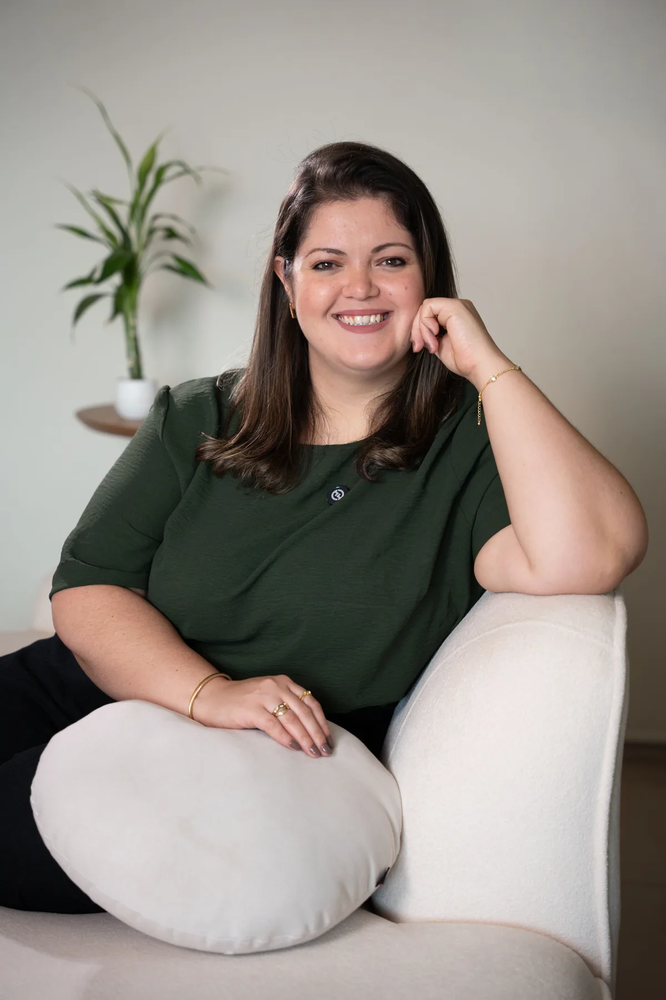

Uma hora de diagnóstico personalizado da sua carreira clínica em TCC e um plano concreto para os próximos 90 dias.
Quero minha mentoriaVocê se reconhece aqui?
Não é falta de esforço. É falta de direção. A graduação não te deu um mapa para crescer e você está tentando construir esse mapa sozinho, um caso de cada vez, com muita insegurança no caminho.
O que é a mentoria
Antes da nossa sessão, você responde um formulário detalhado. Eu leio tudo com atenção e chego à nossa conversa com um diagnóstico.
Na sessão de uma hora, a gente valida esse diagnóstico juntas, aprofunda onde precisar e constrói um plano de ação personalizado, com clareza sobre o que você precisa fazer nos próximos 30 e 90 dias.
Você não sai com impressões gerais. Sai com um mapa.
"Você não precisa de mais informação. Você precisa de alguém que olhe especificamente para você e diga o que fazer primeiro."
Como funciona
Após a compra, você recebe um formulário pré-sessão para responder no seu tempo. Ele mapeia suas inseguranças, sua prática atual, sua identidade profissional e o que você espera da mentoria.
Leio o formulário antes da sessão e construo um esboço do seu diagnóstico. Você não precisa se apresentar — eu já chego com hipóteses sobre onde estão suas lacunas prioritárias.
Em uma hora via Zoom, a gente valida o diagnóstico, vai fundo nos pontos que mais importam e constrói o seu plano de ação. Após a sessão, você recebe tudo por escrito.
As 4 dimensões da mentoria
A mentoria não é uma conversa genérica. Ela parte de um método estruturado que investiga quatro dimensões essenciais da sua carreira, para que você saia sabendo exatamente quem é, para onde vai e o que fazer primeiro.
Onde estão suas lacunas reais, o que estudar primeiro e como aproveitar melhor supervisão e formações.
Seus pontos cegos, como sua história aparece na sessão e o que você atende ou evita sem perceber.
Quem você quer atender, qual nicho faz sentido para o seu perfil e como construir uma identidade profissional que te represente de verdade.
Se o contexto onde você está inserida hoje — convênio, plataforma, consultório, clínica — faz sentido para o seu momento de carreira, e como planejar uma transição se o caminho precisar mudar.
O que você leva da mentoria
Ao final da sessão, você recebe um plano de ação por escrito, construído a partir de quem você é, do momento em que está e de onde quer chegar.
Nada genérico. Nada que sirva para todo mundo. Um mapa feito para você, com clareza sobre o que fazer nos próximos 30 e 90 dias.
Para quem é
Quem vai te orientar

Psicóloga com 14 anos de experiência, mestre em Saúde e especialista em TCC. Passou 8 anos como professora no ensino superior e supervisionou psicólogos em diferentes momentos da carreira. Conhece de perto as dificuldades reais de quem está começando — não só na teoria.
Criadora da disciplina gratuita no YouTube TCC: Do Zero à Formulação de Caso, onde ensina com rigor clínico e aplicação prática para estudantes e recém-formados.
Acredita que o recém-formado tem muito ainda a aprender e que o primeiro passo é saber exatamente o que estudar, em qual ordem e por quê. É essa orientação que ela entrega na mentoria.
Mentoria de Sessão Única
Uma hora. Um diagnóstico real. Um plano que é seu.
Após a compra, você recebe o formulário e agendamos sua sessão.